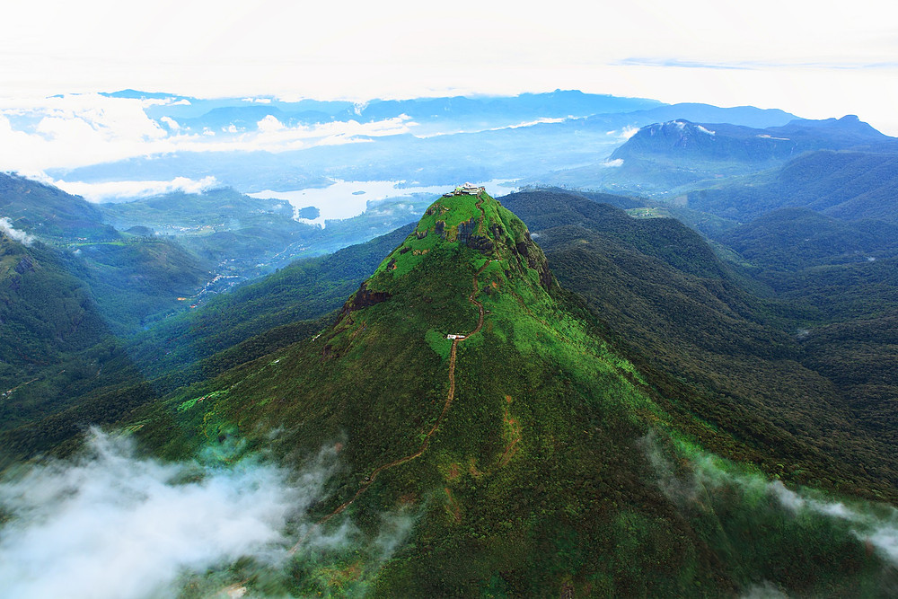

Sinharaja Forest Reserve (Ratnapura District)

Sinharaja Forest Reserve is a forest reserve and a biodiversity hotspot in Sri Lanka. It is of international significance and has been designated a Biosphere Reserve and World Heritage Site by UNESCO.[1] According to International Union for Conservation of Nature (IUCN), Sinharaja is the country's last viable area of primary tropical rainforest. More than 60% of the trees are endemic and many of them are considered rare. 50% of Sri Lankan's endemics species of animals (especially butterfly, amphibians, birds, snakes and fish species). It is home to 95% endemic birds. The hilly virgin rainforest, part of the Sri Lanka lowland rain forests ecoregion, was saved from the worst of commercial logging by its inaccessibility, and was designated a World Biosphere Reserve in 1978 and a World Heritage Site in 1988. Because of the dense vegetation, wildlife is not as easily seen as at dry-zone national parks such as Yala. There are about 3 elephants, and 15 or so[vague] leopards. The most common larger mammal is the endemic purple-faced langur. Birds tend to move in mixed feeding flocks, invariably led by the fearless Sri Lanka Crested Drongo and the noisy orange-billed babbler. Of Sri Lanka's 26 endemic birds, the 20 rainforest species all occur here, including the elusive red-faced malkoha, green-billed coucal and Sri Lanka blue magpie. Reptiles include the endemic green pit viper and hump-nosed vipers, and there are a large variety of amphibians, especially tree frogs. Invertebrates include the endemic Sri Lankan birdwing butterfly and leeches.
Adam's Peak (Ratnapura District)
Adam's Peak is a 2,243 m (7,359 ft) tall conical mountain located in central Sri Lanka. It is well known for the Sri Pada "sacred footprint", a 1.8 m (5 ft 11 in) rock formation near the summit, which in Buddhist tradition is held to be the footprint of the Buddha, in Hindu tradition that of Hanuman or Shiva "Mountain of Shiva's Light", and in some Islamic and Christian traditions that of Adam, or that of St. ThomasDue to its significance to the various people that inhabit the country, the mountain is referred to by a variety of names. The often used Sri Pada is derived from Sanskrit, used by the Sinhalese people in a religious context; this name also has meaning in Pāli, and may be translated roughly as "the sacred foot". It refers to the footprint-shaped mark at the summit, which is believed by Buddhists to be that of the Buddha. Christian and Islamic traditions assert that it is the footprint of Adam, left when first setting foot on Earth after having been cast out of paradise, giving it the name "Adam's Peak